Chapter 11 Mixed Effects Models
library(tidyverse) # dplyr, tidyr, ggplot
library(stringr) # string manipulation stuff
library(lme4) # Our primary analysis routine
library(lmerTest) # A user friendly interface to lme4 that produces p-values
library(emmeans) # For all of my pairwise contrasts
library(car) # For bootstrap Confidence/Prediction Intervals
# library(devtools)
# install_github('dereksonderegger/dsData') # datasets I've made; only install once...
library(dsData)The assumption of independent observations is often not supported and dependent data arises in a wide variety of situations. The dependency structure could be very simple such as rabbits within a litter being correlated and the litters being independent. More complex hierarchies of correlation are possible. For example we might expect voters in a particular part of town (called a precinct) to vote similarly, and particular districts in a state tend to vote similarly as well, which might result in a precinct / district / state hierarchy of correlation.
Many of the designs mentioned in the Block Designs section could be similarly modeled using Mixed Effects Models. In many respects, the random effects structure provides a more flexible framework to consider many of the traditional experimental designs as well as many non-traditional designs with the benefit of more easily assessing variability at each hierarchical level.
Mixed effects models combine what we call “fixed” and “random” effects.
| Fixed effects | Unknown constants that we wish to estimate from the model and could be similarly estimated in subsequent experimentation. The research is interested in these particular levels. |
| Random effects | Random variables sampled from a population which cannot be observed in subsequent experimentation. The research is not interested in these particular levels, but rather how the levels vary from sample to sample. |
For example, in a rabbit study that examined the effect of diet on the growth of domestic rabbits and we had 10 litters of rabbits and used the 3 most similar from each litter to test 6 different diets. Here, the 6 different diets are fixed effects because they are not randomly selected from a population, these exact same diets can be further studied, and these are the diets we are interested it. The litters of rabbits and the individual rabbits are randomly selected from populations, cannot be exactly replicated in future studies, and we are not interested in the individual litters but rather what the variability is between individuals and between litters.
Often random effects are not of primary interest to the researcher, but must be considered. Often blocking variables are random effects because the arise from a random sample of possible blocks that are potentially available to the researcher.
Mixed effects models are models that have both fixed and random effects. We will first concentrate on understanding how to address a model with two sources error and then complicate the matter with fixed effects.
11.1 Review of Maximum Likelihood Methods
Recall that the likelihood function is the function links the model parameters to the data and is found by taking the probability density function and interpreting it as a function of the parameters instead of the a function of the data. Loosely, the probability function tells us what outcomes are most probable, with the height of the function telling us which values (or regions of values) are most probable given a set of parameter values. The higher the probability function, the higher the probability of seeing that value (or data in that region). The likelihood function turns that relationship around and tells us what parameter values are most likely to have generated the data we have, again with the parameter values with a higher likelihood value being more “likely”.
The likelihood function for a sample \(y_i \stackrel{iid}{\sim} N\left( \mu, \sigma \right)\) can be written as a function of our parameters \(\mu\) and \(\sigma^{2}\) then we have defined our likelihood function \[L \left(\mu,\sigma^{2}|y_{1},\dots,y_{n}\right)=\frac{1}{\left(2\pi\right)^{n/2}\left[\det\left(\boldsymbol{\Omega}\right)\right]^{1/2}}\exp\left[-\frac{1}{2}\left(\boldsymbol{y}-\boldsymbol{\mu}\right)^{T}\boldsymbol{\Omega}^{-1}\left(\boldsymbol{y}-\boldsymbol{\mu}\right)\right]\]
where the variance/covariance matrix is \(\boldsymbol{\Omega}=\sigma I_n\).
We can use to this equation to find the maximum likelihood estimators by either taking the derivatives and setting them equal to zero and solving for the parameters or by using numerical methods. In the normal case, we can find the maximum likelihood estimators (MLEs) using the derivative trick and we find that \[\hat{\mu}_{MLE}=\hat{y}=\bar{y}\] and \[\hat{\sigma}_{MLE}^{2}=\frac{1}{n}\sum_{i=1}^{n}\left(y_{i}-\hat{y}\right)^{2}\] and we notice that this is not our usual estimator \(\hat{\sigma}^{2}=s^{2}\) where \(s^{2}\) is the sample variance. It turns out that the MLE estimate of \(\sigma^{2}\) is biased (the correction is to divide by \(n-1\) instead of \(n\)). This is normally not an issue if our sample size is large, but with a small sample, the bias is not insignificant.
Notice if we happened to know that \(\mu=0\), then we could use \[\hat{\sigma}_{MLE}^{2}=\frac{1}{n}\sum_{i=1}^{n}y_{i}^{2}\] and this would be unbiased for \(\sigma^{2}\).
In general (a not just in the normal case above) the Likelihood Ratio Test (LRT) provides a way for us to compare two nested models. Given \(m_{0}\) which is a simplification of \(m_{1}\) then we could calculate the likelihoods functions of the two models \(L\left(\boldsymbol{\theta}_{0}\right)\) and \(L\left(\boldsymbol{\theta}_{1}\right)\) where \(\boldsymbol{\theta}_{0}\) is a vector of parameters for the null model and \(\boldsymbol{\theta}_{1}\) is a vector of parameter for the alternative. Let \(\hat{\boldsymbol{\theta}}_{0}\) be the maximum likelihood estimators for the null model and \(\hat{\boldsymbol{\theta}}_{1}\) be the maximum likelihood estimators for the alternative. Finally we consider the value of \[\begin{aligned} D &= -2*\log\left[\frac{L\left(\hat{\boldsymbol{\theta}}_{0}\right)}{L\left(\hat{\boldsymbol{\theta}}_{1}\right)}\right] \\ &= -2\left[\log L\left(\hat{\boldsymbol{\theta}}_{0}\right)-\log L\left(\hat{\boldsymbol{\theta}}_{1}\right)\right] \end{aligned}\]
Under the null hypothesis that \(m_{0}\) is the true model, the \(D\stackrel{\cdot}{\sim}\chi_{p_{1}-p_{0}}^{2}\) where \(p_{1}-p_{0}\) is the difference in number of parameters in the null and alternative models. That is to say that asymptotically \(D\) has a Chi-squared distribution with degrees of freedom equal to the difference in degrees of freedom of the two models.
We could think of \(L\left(\hat{\boldsymbol{\theta}}_{0}\right)\) as the maximization of the likelihood when some parameters are held constant (at zero) and all the other parameters are vary. But we are not required to hold it constant at zero. We could chose any value of interest and perform a LRT.
Because we often regard a confidence interval as the set of values that would not be rejected by a hypothesis test, we could consider a sequence of possible values for a parameter and figure out which would not be rejected by the LRT. In this fashion we can construct confidence intervals for parameter values.
Unfortunately all of this hinges on the asymptotic distribution of \(D\) and often this turns out to be a poor approximation. In simple cases more exact tests can be derived (for example the F-tests we have used prior) but sometimes nothing better is currently known. Another alternative is to use resampling methods for the creation of confidence intervals or p-values.
11.2 1-way ANOVA with a random effect
We first consider the simplest model with two sources of variability, a 1-way ANOVA with a random factor covariate \[y_{ij}=\mu+\gamma_{i}+\epsilon_{ij}\] where \(\gamma_{i}\stackrel{iid}{\sim}N\left(0,\sigma_{\gamma}^{2}\right)\) and \(\epsilon_{ij}\stackrel{iid}{\sim}N\left(0,\sigma_{\epsilon}^{2}\right)\). This model could occur, for example, when looking at the adult weight of domestic rabbits where the random effect is the effect of litter and we are interested in understanding how much variability there is between litters \(\left(\sigma_{\gamma}^{2}\right)\) and how much variability there is within a litter \(\left(\sigma_{\epsilon}^{2}\right)\). Another example is the the creation of computer chips. Here a single wafer of silicon is used to create several chips and we might have wafer-to-wafer variability and then within a wafer, you have chip-to-chip variability.
First we should think about what the variances and covariances are for any two observations. \[\begin{aligned} Var\left(y_{ij}\right) &= Var\left(\mu+\gamma_{i}+\epsilon_{ij}\right) \\ &= Var\left(\mu\right)+Var\left(\gamma_{i}\right)+Var\left(\epsilon_{ij}\right) \\ &= 0+\sigma_{\gamma}^{2}+\sigma_{\epsilon}^{2} \end{aligned}\] and \(Cov\left(y_{ij},y_{ik}\right)=\sigma_{\gamma}^{2}\) because the two observations share the same litter \(\gamma_{i}\). For two observations in different litters, the covariance is 0. These relationships induce a correlation on observations within the same litter of \[\rho=\frac{\sigma_{\gamma}^{2}}{\sigma_{\gamma}^{2}+\sigma_{\epsilon}^{2}}\]
For example, suppose that we have \(I=3\) litters and in each litter we have \(J=3\) rabbits per litter. Then the variance-covariance matrix looks like \[\boldsymbol{\Omega} = \left[\begin{array}{ccccccccc} \sigma_{\gamma}^{2}+\sigma_{\epsilon}^{2} & \sigma_{\gamma}^{2} & \sigma_{\gamma}^{2} & . & . & . & . & . & .\\ \sigma_{\gamma}^{2} & \sigma_{\gamma}^{2}+\sigma_{\epsilon}^{2} & \sigma_{\gamma}^{2} & . & . & . & . & . & .\\ \sigma_{\gamma}^{2} & \sigma_{\gamma}^{2} & \sigma_{\gamma}^{2}+\sigma_{\epsilon}^{2} & . & . & . & . & . & .\\ . & . & . & \sigma_{\gamma}^{2}+\sigma_{\epsilon}^{2} & \sigma_{\gamma}^{2} & \sigma_{\gamma}^{2} & . & . & .\\ . & . & . & \sigma_{\gamma}^{2} & \sigma_{\gamma}^{2}+\sigma_{\epsilon}^{2} & \sigma_{\gamma}^{2} & . & . & .\\ . & . & . & \sigma_{\gamma}^{2} & \sigma_{\gamma}^{2} & \sigma_{\gamma}^{2}+\sigma_{\epsilon}^{2} & . & . & .\\ . & . & . & . & . & . & \sigma_{\gamma}^{2}+\sigma_{\epsilon}^{2} & \sigma_{\gamma}^{2} & \sigma_{\gamma}^{2}\\ . & . & . & . & . & . & \sigma_{\gamma}^{2} & \sigma_{\gamma}^{2}+\sigma_{\epsilon}^{2} & \sigma_{\gamma}^{2}\\ . & . & . & . & . & . & \sigma_{\gamma}^{2} & \sigma_{\gamma}^{2} & \sigma_{\gamma}^{2}+\sigma_{\epsilon}^{2} \end{array}\right]\]
Substituting this new variance-covariance matrix into our likelihood function, we now have a likelihood function which we can perform our usual MLE tricks with.
In the more complicated situation where we have a full mixed effects model, we could write \[\boldsymbol{y}=\boldsymbol{X}\boldsymbol{\beta}+\boldsymbol{Z}\boldsymbol{\gamma}+\boldsymbol{\epsilon}\] where \(\boldsymbol{X}\) is the design matrix for the fixed effects, \(\boldsymbol{\beta}\) is the vector of fixed effect coefficients, \(\boldsymbol{Z}\) is the design matrix for random effects, \(\boldsymbol{\gamma}\) is the vector of random effects such that \(\gamma_{i}\stackrel{iid}{\sim}N\left(0,\sigma_{\gamma}^{2}\right)\) and finally \(\boldsymbol{\epsilon}\) is the vector of error terms such that \(\epsilon_{ij}\stackrel{iid}{\sim}N\left(0,\sigma_{\epsilon}^{2}\right)\). Notice in our rabbit case
\[\boldsymbol{Z}=\left[\begin{array}{ccc} 1 & \cdot & \cdot\\ 1 & \cdot & \cdot\\ 1 & \cdot & \cdot\\ \cdot & 1 & \cdot\\ \cdot & 1 & \cdot\\ \cdot & 1 & \cdot\\ \cdot & \cdot & 1\\ \cdot & \cdot & 1\\ \cdot & \cdot & 1 \end{array}\right]\;\;\;\;ZZ^{T}=\left[\begin{array}{ccccccccc} 1 & 1 & 1 & \cdot & \cdot & \cdot & \cdot & \cdot & \cdot\\ 1 & 1 & 1 & \cdot & \cdot & \cdot & \cdot & \cdot & \cdot\\ 1 & 1 & 1 & \cdot & \cdot & \cdot & \cdot & \cdot & \cdot\\ \cdot & \cdot & \cdot & 1 & 1 & 1 & \cdot & \cdot & \cdot\\ \cdot & \cdot & \cdot & 1 & 1 & 1 & \cdot & \cdot & \cdot\\ \cdot & \cdot & \cdot & 1 & 1 & 1 & \cdot & \cdot & \cdot\\ \cdot & \cdot & \cdot & \cdot & \cdot & \cdot & 1 & 1 & 1\\ \cdot & \cdot & \cdot & \cdot & \cdot & \cdot & 1 & 1 & 1\\ \cdot & \cdot & \cdot & \cdot & \cdot & \cdot & 1 & 1 & 1 \end{array}\right]\]
which makes it easy to notice \[\boldsymbol{\Omega}=\sigma_{\gamma}^{2}\boldsymbol{Z}\boldsymbol{Z}^{T}+\sigma_{\epsilon}^{2}\boldsymbol{I}\]
In practice we tend to have relatively small numbers of block parameters and thus have a small number of observations in which to estimate \(\sigma_{\gamma}^{2}\) which means that the biased nature of MLE estimates will be sub-optimal. If we knew that \(\boldsymbol{X}\boldsymbol{\beta}=\boldsymbol{0}\) we could use that fact and have an unbiased estimate of our variance parameters. Because \(\boldsymbol{X}\) is known, we can find linear functions \(\boldsymbol{k}\) such that \(\boldsymbol{k}^{T}\boldsymbol{X}=0\). We can form a matrix \(\boldsymbol{K}\) that represents all of these possible transformations and we notice that \[\boldsymbol{K}^{T}\boldsymbol{y} \sim N \left( \boldsymbol{K}^{T}\boldsymbol{X\beta}, \, \boldsymbol{K}^{T}\boldsymbol{\Omega}\boldsymbol{K}\right) = N\left( \boldsymbol{0}, \boldsymbol{K}^{T}\boldsymbol{\Omega}\boldsymbol{K}\right)\] and perform our maximization on this transformed set of data. Once we have our unbiased estimates of \(\sigma_{\gamma}^{2}\) and \(\sigma_{\epsilon}^{2}\), we can substitute these back into the untransformed likelihood function and find the MLEs for \(\boldsymbol{\beta}\). This process is called Restricted Maximum Likelihood (REML) and is generally preferred over the variance component estimates found simply maximizing the regular likelihood function. As usual, if our experiment is balanced these complications aren’t necessary as the REML estimates of \(\boldsymbol{\beta}\) are usually the same as the ML estimates.
Our first example comes from an experiment to test the paper brightness as affected by the shift operator. The data has 20 observations with 4 different operators. Each operator had 5 different observations made. The data set is pulp in the package faraway. We will first analyze this using a fixed-effects one-way ANOVA, but we will use a different model representation. Instead of using the first operator as the reference level, we will use the sum-to-zero constraint (to make it easier to compare with the output of the random effects model).
# set the contrasts to sum-to-zero constraint
op <- options(contrasts=c('contr.sum', 'contr.poly'))
m <- aov(bright ~ operator, data=pulp)
summary(m)## Df Sum Sq Mean Sq F value Pr(>F)
## operator 3 1.34 0.4467 4.204 0.0226 *
## Residuals 16 1.70 0.1062
## ---
## Signif. codes: 0 '***' 0.001 '**' 0.01 '*' 0.05 '.' 0.1 ' ' 1## (Intercept) operator1 operator2 operator3
## 60.40 -0.16 -0.34 0.22The sum-to-zero constraint forces the operator parameters to sum to zero so we can find the value of the fourth operator as operator4 = -(-0.16-0.34+0.22) = 0.28
To fit the random effects model we will use the package lmerTest which is a nicer user interface to the package lme4. The reason we won’t use lme4 directly is that the authors of lme4 refuse to calculate p-values. The reason for this is that in mixed models it is not always clear what the appropriate degrees of freedom are for the residuals, and therefore we don’t know what the appropriate t-distribution is to compare the t-values to. In simple balanced designs the degrees of freedom can be calculated, but in complicated unbalanced designs the appropriate degrees of freedom is not known and all proposed heuristic methods (including what is calculated by SAS) can fail spectacularly in certain cases. The authors of lme4 are adamant that until robust methods are developed, they prefer to not calculate any p-values. There are other packages out there that recognize that we need approximate p-values and the package lmerTest provides reasonable answers that match was SAS calculates.
m2 <- lmer( bright ~ 1 + (1|operator), data=pulp )
summary(m2) # because there are no fixed effects, lmerTest bailed out to lme4.## Linear mixed model fit by REML. t-tests use Satterthwaite's method [
## lmerModLmerTest]
## Formula: bright ~ 1 + (1 | operator)
## Data: pulp
##
## REML criterion at convergence: 18.6
##
## Scaled residuals:
## Min 1Q Median 3Q Max
## -1.4666 -0.7595 -0.1244 0.6281 1.6012
##
## Random effects:
## Groups Name Variance Std.Dev.
## operator (Intercept) 0.06808 0.2609
## Residual 0.10625 0.3260
## Number of obs: 20, groups: operator, 4
##
## Fixed effects:
## Estimate Std. Error df t value Pr(>|t|)
## (Intercept) 60.4000 0.1494 3.0000 404.2 3.34e-08 ***
## ---
## Signif. codes: 0 '***' 0.001 '**' 0.01 '*' 0.05 '.' 0.1 ' ' 1Notice that the estimate of the fixed effect (the overall mean) is the same in the fixed-effects ANOVA and in the mixed model. However the fixed effects ANOVA estimates the effect of each operator while the mixed model is interested in estimating the variance between operators. In the model statement the (1|operator) denotes the random effect and this notation tells us to fit a model with a random intercept term for each operator. Here the variance associated with the operators is \(\sigma_{\gamma}^{2}=0.068\) while the “pure error” is \(\sigma_{\epsilon}^{2}=0.106\). The column for standard deviation is not the variability associated with our estimate, but is simply the square-root of the variance terms \(\sigma_{\gamma}\) and \(\sigma_{\epsilon}\). This was fit using the REML method.
We might be interested in the estimated effect of each operator
## $operator
## (Intercept)
## a -0.1219403
## b -0.2591232
## c 0.1676679
## d 0.2133955
##
## with conditional variances for "operator"These effects are smaller than the values we estimated in the fixed effects model due to distributional assumption that penalizes large deviations from the mean. In general, the estimated random effects are of smaller magnitude than the effect size estimated using a fixed effect model.
11.3 Blocks as Random Variables
Blocks are properties of experimental designs and usually we are not interested in the block levels per se but need to account for the variability introduced by them.
Recall the agriculture experiment in the dataset oatvar from the faraway package. We had 8 different varieties of oats and we had 5 different fields (which we called blocks). Because of limitations on how we plant, we could only divide the blocks into 8 plots and in each plot we planted one of the varieties.
data('oatvar', package='faraway')
ggplot(oatvar, aes(y=yield, x= variety)) +
geom_point() +
facet_wrap(~block, labeller=label_both)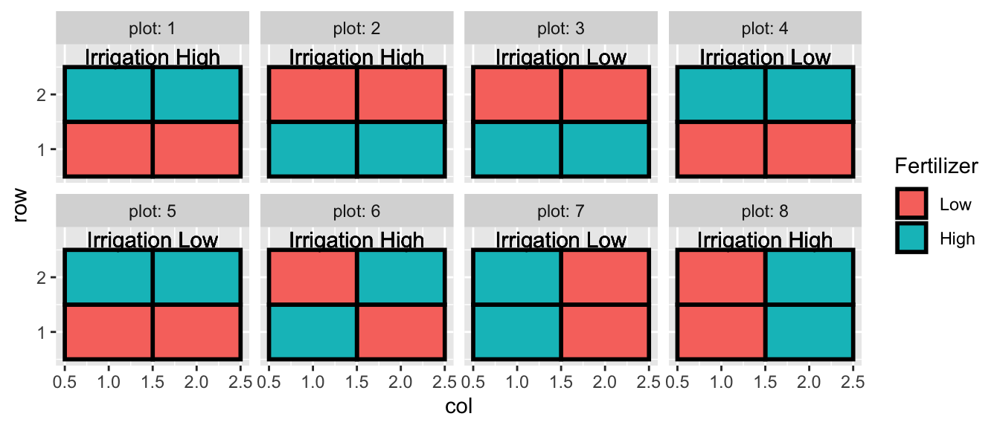
In this case, we don’t really care about these particular fields (blocks) and would prefer to think about these as a random sample of fields that we might have used in our experiment.
model.0 <- lmer( yield ~ (1|block), data=oatvar)
model.1 <- lmer( yield ~ variety + (1|block), data=oatvar)
anova(model.0, model.1)## refitting model(s) with ML (instead of REML)## Data: oatvar
## Models:
## model.0: yield ~ (1 | block)
## model.1: yield ~ variety + (1 | block)
## Df AIC BIC logLik deviance Chisq Chi Df Pr(>Chisq)
## model.0 3 446.94 452.01 -220.47 440.94
## model.1 10 421.67 438.56 -200.84 401.67 39.27 7 1.736e-06 ***
## ---
## Signif. codes: 0 '***' 0.001 '**' 0.01 '*' 0.05 '.' 0.1 ' ' 1Notice that this is doing a Likelihood Ratio Test \[-2 * \log \left( \frac{L_0}{L_a} \right) = -2 \left( \log(L_0) - \log(L_a) \right) = -2*(-220.47 - -200.56) = 39.24\]
This shows that the variety matters, though this is pretty annoying. We’d prefer to use the anova command with just model and see the p-values for each covariate.
## Type III Analysis of Variance Table with Satterthwaite's method
## Sum Sq Mean Sq NumDF DenDF F value Pr(>F)
## variety 77524 11075 7 28 8.2841 1.803e-05 ***
## ---
## Signif. codes: 0 '***' 0.001 '**' 0.01 '*' 0.05 '.' 0.1 ' ' 1There is quite a bit of debate among statisticians about which test should be recommended in different scenarios using random effects and this is an active area of research. In this case, instead of performing a LRT, the lmerTest package opted to use a Satterthwaite approximation.
Now that we have chosen our model, we can examine is model.
## Linear mixed model fit by REML. t-tests use Satterthwaite's method [
## lmerModLmerTest]
## Formula: yield ~ variety + (1 | block)
## Data: oatvar
##
## REML criterion at convergence: 341.4
##
## Scaled residuals:
## Min 1Q Median 3Q Max
## -1.7135 -0.5503 -0.1280 0.4863 2.1756
##
## Random effects:
## Groups Name Variance Std.Dev.
## block (Intercept) 876.6 29.61
## Residual 1336.9 36.56
## Number of obs: 40, groups: block, 5
##
## Fixed effects:
## Estimate Std. Error df t value Pr(>|t|)
## (Intercept) 334.40 21.04 15.25 15.893 6.66e-11 ***
## variety2 42.20 23.12 28.00 1.825 0.0787 .
## variety3 28.20 23.12 28.00 1.219 0.2328
## variety4 -47.60 23.12 28.00 -2.058 0.0490 *
## variety5 105.00 23.12 28.00 4.541 9.73e-05 ***
## variety6 -3.80 23.12 28.00 -0.164 0.8707
## variety7 -16.00 23.12 28.00 -0.692 0.4947
## variety8 49.80 23.12 28.00 2.154 0.0400 *
## ---
## Signif. codes: 0 '***' 0.001 '**' 0.01 '*' 0.05 '.' 0.1 ' ' 1
##
## Correlation of Fixed Effects:
## (Intr) varty2 varty3 varty4 varty5 varty6 varty7
## variety2 -0.550
## variety3 -0.550 0.500
## variety4 -0.550 0.500 0.500
## variety5 -0.550 0.500 0.500 0.500
## variety6 -0.550 0.500 0.500 0.500 0.500
## variety7 -0.550 0.500 0.500 0.500 0.500 0.500
## variety8 -0.550 0.500 0.500 0.500 0.500 0.500 0.500We start with the Random effects. This section shows us the block-to-block variability (and the square root of that, the Standard Deviation) as well as the “pure-error”, labeled residuals, which is an estimate of the variability associated with two different observations (after the difference in variety is accounted for) planted within the same block. For this we see that block-to-block variability is only slightly smaller than the within block variability.
Why do we care about this? This actually tells us quite a lot about the spatial variability. Because yield is affected by soil nutrients, micro-climate, soil water availability, etc, I expect that two identical seedlings planted in slightly different conditions will have slightly different yields. By examining how the yield changes over small distances (the residual within block variability) vs how it changes over long distances (block to block variability) we can get a sense as to the scale at which these background lurking processes operate.
Next we turn to the fixed effects. These will be the offsets from the reference group, as we’ve typically worked with. Here we see that varieties 2,5, and 8 are the best performers (relative to variety 1),
We are certain that there are differences among the varieties, and we should look at all of the pairwise contrasts among the variety levels. As usual we could use the package emmeans, which automates much of this (and uses lmerTest produced p-values for the tests).
## variety emmean SE df lower.CL upper.CL .group
## 4 287 21 15.2 242 332 a
## 7 318 21 15.2 274 363 ab
## 6 331 21 15.2 286 375 ab
## 1 334 21 15.2 290 379 ab
## 3 363 21 15.2 318 407 b
## 2 377 21 15.2 332 421 bc
## 8 384 21 15.2 339 429 bc
## 5 439 21 15.2 395 484 c
##
## Degrees-of-freedom method: kenward-roger
## Confidence level used: 0.95
## P value adjustment: tukey method for comparing a family of 8 estimates
## significance level used: alpha = 0.05As usual we’ll join this information into the original data table and then make a nice summary graph.
LetterResults <- LetterResults %>%
mutate(LetterHeight=500, .group = str_trim(.group))
ggplot(oatvar, aes(x=variety, y=yield)) +
geom_point(aes(color=block)) +
geom_text(data=LetterResults, aes(label=.group, y=LetterHeight))We’ll consider a second example using data from the pharmaceutical industry. We are interested in 4 different processes (our treatment variable) used in the biosynthesis and purification of the drug penicillin. The biosynthesis requires a nutrient source (corn steep liquor) as a nutrient source for the fungus and the nutrient source is quite variable. Each batch of the nutrient is is referred to as a ‘blend’ and each blend is sufficient to create 4 runs of penicillin. We avoid confounding our biosynthesis methods with the blend by using a Randomized Complete Block Design and observing the yield of penicillin from each of the four methods (A,B,D, and D) in each blend.
data(penicillin, package='faraway')
ggplot(penicillin, aes(y=yield, x=treat)) +
geom_point() +
facet_wrap( ~ blend, ncol=5)
It looks like there is definitely a Blend effect (e.g. Blend1 is much better than Blend5) but it isn’t clear that there is a treatment effect.
model.0 <- lmer(yield ~ 1 + (1 | blend), data=penicillin)
model.1 <- lmer(yield ~ treat + (1 | blend), data=penicillin)
anova(model.0, model.1) # Analysis using a LRT## refitting model(s) with ML (instead of REML)## Data: penicillin
## Models:
## model.0: yield ~ 1 + (1 | blend)
## model.1: yield ~ treat + (1 | blend)
## Df AIC BIC logLik deviance Chisq Chi Df Pr(>Chisq)
## model.0 3 127.33 130.31 -60.662 121.33
## model.1 6 129.28 135.25 -58.639 117.28 4.0474 3 0.2564## Type III Analysis of Variance Table with Satterthwaite's method
## Sum Sq Mean Sq NumDF DenDF F value Pr(>F)
## treat 70 23.333 3 12 1.239 0.3386It looks like we don’t have a significant effect of the treatments. Next we’ll examine the simple model to understand the variability.
## Linear mixed model fit by REML. t-tests use Satterthwaite's method [
## lmerModLmerTest]
## Formula: yield ~ 1 + (1 | blend)
## Data: penicillin
##
## REML criterion at convergence: 118.4
##
## Scaled residuals:
## Min 1Q Median 3Q Max
## -1.5526 -0.7310 -0.0789 0.5007 1.8241
##
## Random effects:
## Groups Name Variance Std.Dev.
## blend (Intercept) 11.57 3.401
## Residual 19.73 4.442
## Number of obs: 20, groups: blend, 5
##
## Fixed effects:
## Estimate Std. Error df t value Pr(>|t|)
## (Intercept) 86.000 1.817 4.000 47.34 1.19e-06 ***
## ---
## Signif. codes: 0 '***' 0.001 '**' 0.01 '*' 0.05 '.' 0.1 ' ' 1We see that the noise is more in the within blend rather than the between blends. If my job were to understand the variability and figure out how to improve production, this suggests that understanding the both how variability is introduced at the blend level and at the run level. The run level has slightly more variability, so I might start there.
11.4 Nested Effects
When the levels of one factor vary only within the levels of another factor, that factor is said to be nested. For example, when measuring the performance of workers at several job locations, if the workers only work at one site, then the workers are nested within site. If the workers work at more than one location, we would say that workers are crossed with site.
We’ve already seen a number of nested designs when we looked at split plot designs. Recall the AgData set that I made up that simulated an agricultural experiment with 8 plots and 4 subplots per plot. We applied an irrigation treatment at the plot level and a fertilizer treatment at the subplot level. I actually have 5 replicate observations per subplot.
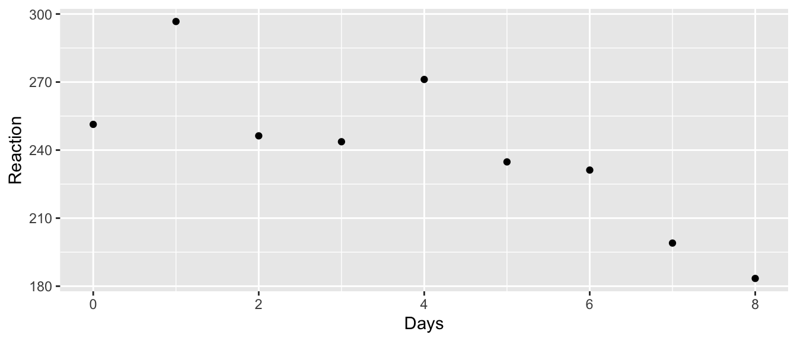
So all together we have 8 plots, 32 subplots, and 5 replicates per subplot. When I analyze the fertilizer, I have 32 experimental units (the thing I have applied my treatment to), but when analyzing the effect of irrigation, I only have 8 experimental units. In other words, I should have 8 random effects for plot, and 32 random effects for subplot.
# The following model definitions are equivalent
model <- lmer(yield ~ Irrigation + Fertilizer + (1|plot) + (1|plot:subplot), data=AgData )
model <- lmer(yield ~ Irrigation + Fertilizer + (1|plot/subplot), data=AgData)
anova(model)## Type III Analysis of Variance Table with Satterthwaite's method
## Sum Sq Mean Sq NumDF DenDF F value Pr(>F)
## Irrigation 3.4795 3.4795 1 6.0061 3.4306 0.1134
## Fertilizer 31.3810 31.3810 1 22.9971 30.9399 1.17e-05 ***
## ---
## Signif. codes: 0 '***' 0.001 '**' 0.01 '*' 0.05 '.' 0.1 ' ' 1As we saw before, the effect of irrigation is not significant and the fertilizer effect is highly significant. We’ll remove the irrigation covariate and refit the model.
## Linear mixed model fit by REML. t-tests use Satterthwaite's method [
## lmerModLmerTest]
## Formula: yield ~ Fertilizer + (1 | plot/subplot)
## Data: AgData
##
## REML criterion at convergence: 572.6
##
## Scaled residuals:
## Min 1Q Median 3Q Max
## -1.78716 -0.62879 -0.08602 0.64094 2.36354
##
## Random effects:
## Groups Name Variance Std.Dev.
## subplot:plot (Intercept) 5.345 2.312
## plot (Intercept) 8.857 2.976
## Residual 1.014 1.007
## Number of obs: 160, groups: subplot:plot, 32; plot, 8
##
## Fixed effects:
## Estimate Std. Error df t value Pr(>|t|)
## (Intercept) 21.0211 1.2058 8.9695 17.434 3.16e-08 ***
## FertilizerHigh 4.6323 0.8328 23.0005 5.563 1.17e-05 ***
## ---
## Signif. codes: 0 '***' 0.001 '**' 0.01 '*' 0.05 '.' 0.1 ' ' 1
##
## Correlation of Fixed Effects:
## (Intr)
## FertilzrHgh -0.345Notice the plant-to-plant noise is about 1/3 of the noise associated with subplot-to-subplot or even plot-to-plot.
A number of in-situ experiments looking at the addition CO\(_2\) and warming on landscapes have been done (typically called Free Air CO\(_2\) Experiments (FACE)) and these are interesting from an experimental design perspective because we have limited number of replicates because the cost of exposing plants to different CO\(_2\) levels outside a greenhouse is extraordinarily expensive. In the dsData package, there is a dataset that is inspired by one of those studies.
The experimental units for the CO\(_2\) treatment will be called a ring, and we have nine rings. We have three treatments (A,B,C) which correspond to an elevated CO\(_2\) treatment, an ambient CO\(_2\) treatment with all the fans, and a pure control. For each ring we’ll have some measure of productivity but we have six replicate observations per ring.
## Trt Ring Rep y
## 1 A 1 1 363.9684
## 2 A 1 2 312.0613
## 3 A 1 3 332.9916
## 4 A 1 4 320.0109
## 5 A 1 5 292.2656
## 6 A 1 6 315.8136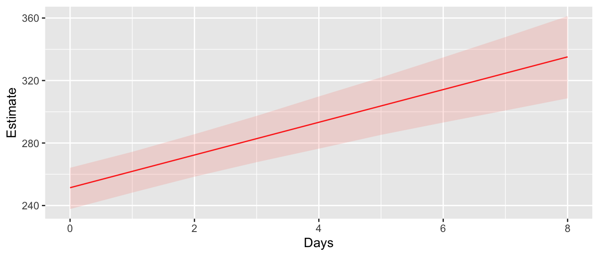
We can easily fit this model using random effects for each ring.
## Type III Analysis of Variance Table with Satterthwaite's method
## Sum Sq Mean Sq NumDF DenDF F value Pr(>F)
## Trt 10776 5388 2 5.9999 5.7175 0.04076 *
## ---
## Signif. codes: 0 '***' 0.001 '**' 0.01 '*' 0.05 '.' 0.1 ' ' 1To think about what is actually going on, it is helpful to consider the predicted values from this model. As usual we will use the predict function, but now we have the option of including the random effects or not.
First lets consider the predicted values if we completely ignore the Ring random effect while making predictions.
HierarchicalData <- HierarchicalData %>%
mutate( y.hat = predict(model, re.form= ~ 0), # don't include any random effects
y.hat = round( y.hat, digits=2),
my.text = paste('yhat =', y.hat),
text.height = 1.8) 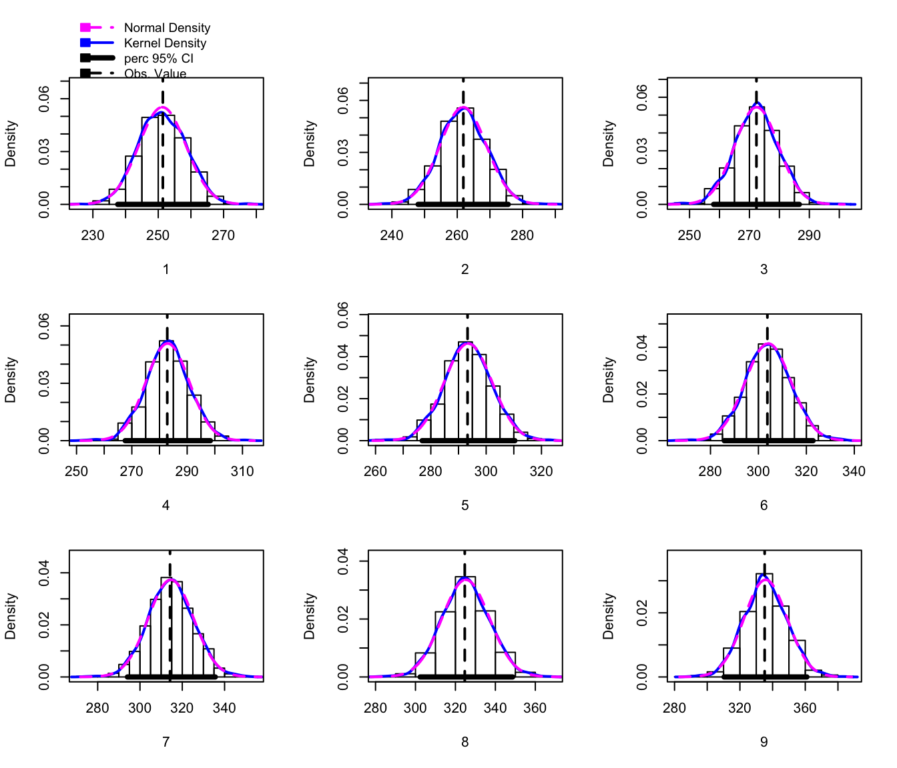
Now we consider the predicted values, but created using the Ring random effect. These random effects provide for a slight perturbation up or down depending on the quality of the Ring, but the sum of all 9 Ring effects is required to be 0.
## $Ring
## (Intercept)
## 1 9.458762
## 2 -29.798501
## 3 20.339739
## 4 -40.533076
## 5 21.067557
## 6 19.465519
## 7 -21.814461
## 8 2.548294
## 9 19.266167
##
## with conditional variances for "Ring"## [1] -5.431655e-12Also notice that the sum of the random effects within a treatment is zero! (Recall Ring 1:3 was treatment A, 4:6 was treatment B, and 7:9 was treatment C).
HierarchicalData <- HierarchicalData %>%
mutate( y.hat = predict(model, re.form= ~ (1|Ring)), # Include Ring Random effect
y.hat = round( y.hat, digits=2),
my.text = paste('yhat =', y.hat),
text.height = 1.8) 
We interpret the random effect of Ring as a perturbation to expected value of the response that you expect just based on the treatment provided.
We’ll now consider an example with a somewhat ridiculous amount of nesting. We will consider an experiment run to test the consistency between laboratories. A large jar of dried egg power was fully homogenized and divided into a number of samples and the fat content between the samples should be the same. Six laboratories were randomly selected and each lab would receive 4 samples, two labeled H and two labeled G. The labs are instructed to give two samples to two different technicians who are to divide each sample into two sub-samples and measures the fat content twice within a sub sample. So our hierarchy is that observations are nested within sub-samples which are nested within technicians which are nested in labs.
In terms of notation, we will refer to the 6 labs as \(L_{i}\) and the lab technicians as \(T_{ij}\) and we note that \(j\) is either 1 or 2 which doesn’t uniquely identify the technician unless we include the lab subscript as well. Finally the sub-samples are nested within the technicians and we denote them as \(S_{ijk}\). Finally our “pure” error is the two measurements from the same sub-sample. So the model we wish to fit is: \[y_{ijkl}=\mu+L_{i}+T_{ij}+S_{ijk}+\epsilon_{ijkl}\] where \(L_{i}\stackrel{iid}{\sim}N\left(0,\sigma_{L}^{2}\right)\), \(T_{ij}\stackrel{iid}{\sim}N\left(0,\sigma_{T}^{2}\right)\), \(S_{ijk}\stackrel{iid}{\sim}N\left(0,\sigma_{S}^{2}\right)\), \(\epsilon_{ijkl}\stackrel{iid}{\sim}N\left(0,\sigma_{\epsilon}^{2}\right)\).
We need a convenient way to tell lmer which factors are nested in which. We can do this by creating data columns that make the interaction terms. For example there are 12 technicians (2 from each lab), but in our data frame we only see two levels, so to create all 12 random effects, we need to create an interaction column (or tell lmer to create it and use it). Likewise there are 24 sub-samples and 48 “pure” random effects.
data('eggs', package='faraway')
model <- lmer( Fat ~ 1 + (1|Lab) + (1|Lab:Technician) +
(1|Lab:Technician:Sample), data=eggs)
model <- lmer( Fat ~ 1 + (1|Lab/Technician/Sample), data=eggs)eggs <- eggs %>%
mutate( yhat = predict(model, re.form=~0))
ggplot(eggs, aes(x=Sample, y=Fat)) +
geom_point() +
geom_line(aes(y=yhat, x=as.integer(Sample)), color='red') +
facet_grid(. ~ Lab:Technician) +
ggtitle('Average Value Only')eggs <- eggs %>%
mutate( yhat = predict(model, re.form=~(1|Lab)))
ggplot(eggs, aes(x=Sample, y=Fat)) +
geom_point() +
geom_line(aes(y=yhat, x=as.integer(Sample)), color='red') +
facet_grid(. ~ Lab+Technician) +
ggtitle('Average With Lab Offset')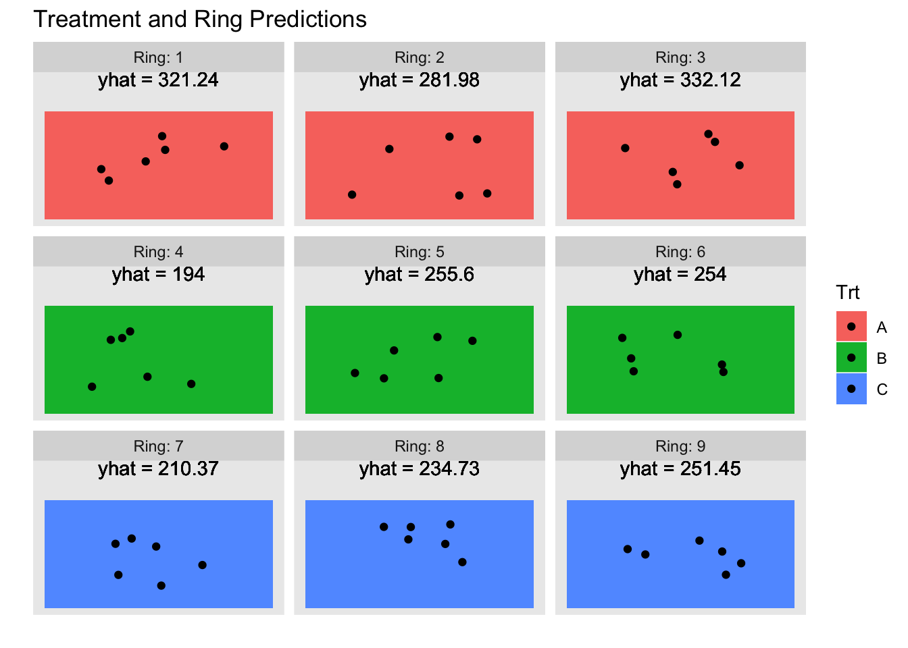
eggs <- eggs %>%
mutate( yhat = predict(model, re.form=~(1|Lab/Technician)))
ggplot(eggs, aes(x=Sample, y=Fat)) +
geom_point() +
geom_line(aes(y=yhat, x=as.integer(Sample)), color='red') +
facet_grid(. ~ Lab+Technician) +
ggtitle('Average With Lab + Technician Offset')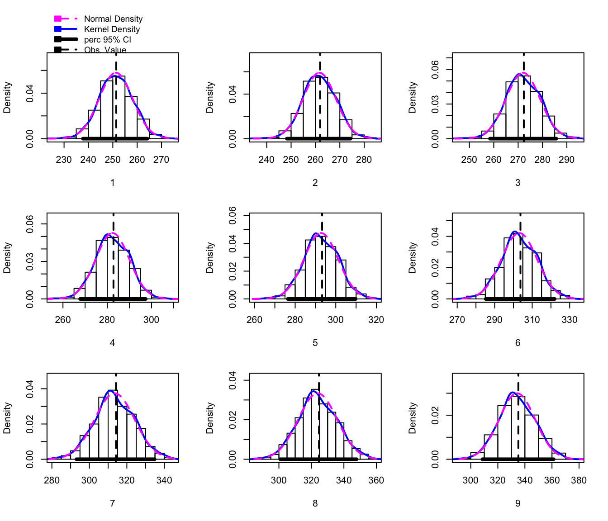
eggs <- eggs %>%
mutate( yhat = predict(model, re.form=~(1|Lab/Technician/Sample)))
ggplot(eggs, aes(x=Sample, y=Fat)) +
geom_point() +
geom_line(aes(y=yhat, x=as.integer(Sample)), color='red') +
facet_grid(. ~ Lab+Technician) +
ggtitle('Average With Lab + Technician + Sample Offset')No that we have an idea of how things vary, we can look at the summary table.
## Linear mixed model fit by REML. t-tests use Satterthwaite's method [
## lmerModLmerTest]
## Formula: Fat ~ 1 + (1 | Lab/Technician/Sample)
## Data: eggs
##
## REML criterion at convergence: -64.2
##
## Scaled residuals:
## Min 1Q Median 3Q Max
## -2.04098 -0.46571 0.00925 0.59713 1.54276
##
## Random effects:
## Groups Name Variance Std.Dev.
## Sample:(Technician:Lab) (Intercept) 0.003065 0.05536
## Technician:Lab (Intercept) 0.006981 0.08355
## Lab (Intercept) 0.005918 0.07693
## Residual 0.007196 0.08483
## Number of obs: 48, groups:
## Sample:(Technician:Lab), 24; Technician:Lab, 12; Lab, 6
##
## Fixed effects:
## Estimate Std. Error df t value Pr(>|t|)
## (Intercept) 0.38750 0.04296 5.00064 9.02 0.00028 ***
## ---
## Signif. codes: 0 '***' 0.001 '**' 0.01 '*' 0.05 '.' 0.1 ' ' 111.5 Crossed Effects
If two effects are not nested, we say they are crossed. In the penicillin example, the treatments and blends were not nested and are therefore crossed.
An example is a Latin square experiment to look the effects of abrasion on four different material types (A, B, C, and D). We have a machine to do the abrasion test with four positions and we did 4 different machine runs. Our data looks like the following setup:
| run | Position: 1 | Position: 2 | Position: 3 | Position: 4 |
|---|---|---|---|---|
| 1 | C | D | B | A |
| 2 | A | B | D | C |
| 3 | D | C | A | B |
| 4 | B | A | C | D |
Our model can be written as \[y_{ijk}=\mu+M_{i}+P_{j}+R_{k}+\epsilon_{ijk}\] and we notice that the position and run effects are not nested within anything else and thus the subscript have just a single index variable. Certainly the run effect should be considered random as these four are a sample from all possible runs, but what about the position variable? Here we consider that the machine being used is a random selection from all possible abrasion machines and any position differences have likely developed over time and could be considered as a random sample of possible position effects. We’ll regard both position and run as crossed random effects.
data('abrasion', package='faraway')
ggplot(abrasion, aes(x=material, y=wear, color=position, shape=run)) +
geom_point(size=3)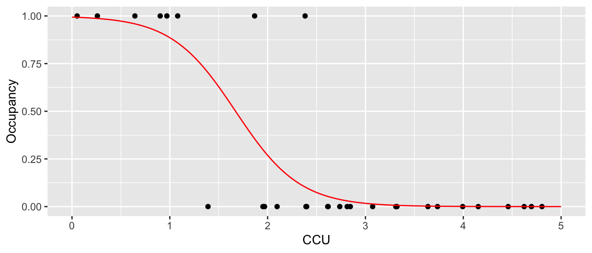
It certainly looks like the materials are different. I don’t think the run matters, but position 2 seems to develop excessive wear compared to the other positions.
## Type III Analysis of Variance Table with Satterthwaite's method
## Sum Sq Mean Sq NumDF DenDF F value Pr(>F)
## material 4621.5 1540.5 3 6 25.151 0.0008497 ***
## ---
## Signif. codes: 0 '***' 0.001 '**' 0.01 '*' 0.05 '.' 0.1 ' ' 1The material effect is statistically significant and we can figure out the pairwise differences in the usual fashion.
## $emmeans
## material emmean SE df lower.CL upper.CL
## A 266 7.67 7.47 248 284
## B 220 7.67 7.47 202 238
## C 242 7.67 7.47 224 260
## D 230 7.67 7.47 213 248
##
## Degrees-of-freedom method: kenward-roger
## Confidence level used: 0.95
##
## $contrasts
## contrast estimate SE df t.ratio p.value
## A - B 45.8 5.53 6 8.267 0.0007
## A - C 24.0 5.53 6 4.337 0.0190
## A - D 35.2 5.53 6 6.370 0.0029
## B - C -21.8 5.53 6 -3.930 0.0295
## B - D -10.5 5.53 6 -1.897 0.3206
## C - D 11.2 5.53 6 2.033 0.2743
##
## P value adjustment: tukey method for comparing a family of 4 estimates## material emmean SE df lower.CL upper.CL .group
## B 220 7.67 7.47 202 238 a
## D 230 7.67 7.47 213 248 ab
## C 242 7.67 7.47 224 260 b
## A 266 7.67 7.47 248 284 c
##
## Degrees-of-freedom method: kenward-roger
## Confidence level used: 0.95
## P value adjustment: tukey method for comparing a family of 4 estimates
## significance level used: alpha = 0.05So material D is in between materials B and C for abrasion resistance.
## Linear mixed model fit by REML. t-tests use Satterthwaite's method [
## lmerModLmerTest]
## Formula: wear ~ material + (1 | run) + (1 | position)
## Data: abrasion
##
## REML criterion at convergence: 100.3
##
## Scaled residuals:
## Min 1Q Median 3Q Max
## -1.08974 -0.30232 0.02698 0.42257 1.21049
##
## Random effects:
## Groups Name Variance Std.Dev.
## run (Intercept) 66.89 8.179
## position (Intercept) 107.08 10.348
## Residual 61.25 7.826
## Number of obs: 16, groups: run, 4; position, 4
##
## Fixed effects:
## Estimate Std. Error df t value Pr(>|t|)
## (Intercept) 265.750 7.668 7.474 34.655 1.58e-09 ***
## materialB -45.750 5.534 6.000 -8.267 0.000169 ***
## materialC -24.000 5.534 6.000 -4.337 0.004892 **
## materialD -35.250 5.534 6.000 -6.370 0.000703 ***
## ---
## Signif. codes: 0 '***' 0.001 '**' 0.01 '*' 0.05 '.' 0.1 ' ' 1
##
## Correlation of Fixed Effects:
## (Intr) matrlB matrlC
## materialB -0.361
## materialC -0.361 0.500
## materialD -0.361 0.500 0.500Notice that run and the pure error have about the same magnitude, but position is more substantial. Lets see what happens if we remove the run random effect.
## refitting model(s) with ML (instead of REML)## Data: abrasion
## Models:
## m2: wear ~ material + (1 | position)
## m: wear ~ material + (1 | run) + (1 | position)
## Df AIC BIC logLik deviance Chisq Chi Df Pr(>Chisq)
## m2 6 137.74 142.38 -62.870 125.74
## m 7 134.32 139.73 -60.162 120.32 5.4164 1 0.01995 *
## ---
## Signif. codes: 0 '***' 0.001 '**' 0.01 '*' 0.05 '.' 0.1 ' ' 1Notice that R is refitting the model to make an appropriate comparison. The AIC difference between the two models is about 3 units (the larger model having a lower AIC) and so we could interpret this as decent evidence for a run effect. Similarly the Likelihood Ratio Test gives a p-value of about \(0.02\). So while the run effect wasn’t visible in our initial graph, it looks like it is a statistically significant effect.
11.6 Repeated Measures / Longitudinal Studies
In repeated measurement experiments, repeated observations are taken on each subject. When those repeated measurements are taken over a sequence of time, we call it a longitudinal study. Typically covariates are also observed at the same time points and we are interested in how the response is related to the covariates.
In this case the correlation structure is that observations on the same person/object should be more similar than observations between two people/objects. As a result we need to account for repeated measures by including the person/object as a random effect.
To demonstrate a longitudinal study we turn to the data set sleepstudy in the lme4 library. Eighteen patients participated in a study in which they were allowed only 3 hours of sleep per night and their reaction time in a specific test was observed. On day zero (before any sleep deprivation occurred) their reaction times were recorded and then the measurement was repeated on 9 subsequent days.
data('sleepstudy', package='lme4')
ggplot(sleepstudy, aes(y=Reaction, x=Days)) +
facet_wrap(~ Subject, ncol=6) +
geom_point() +
geom_line()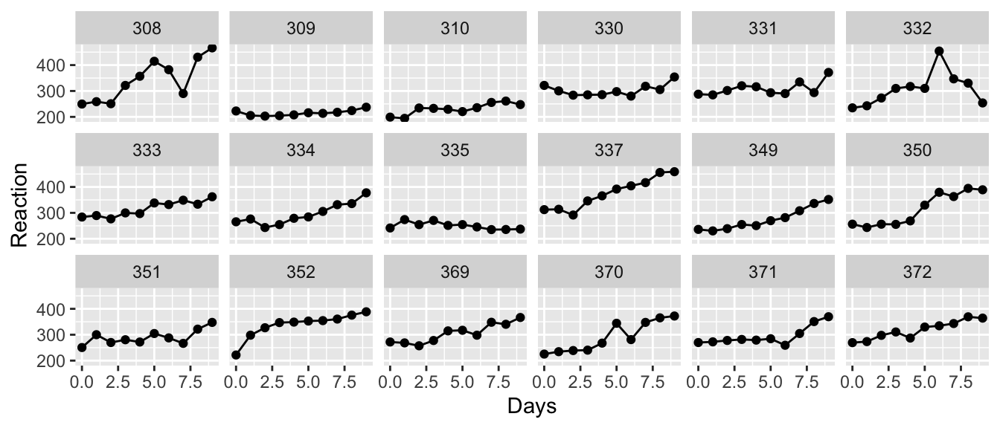
We want to fit a line to these data, but how should we do this? First we notice that each subject has their own baseline for reaction time and the subsequent measurements are relative to this, so it is clear that we should fit a model with a random intercept.
## Linear mixed model fit by REML. t-tests use Satterthwaite's method [
## lmerModLmerTest]
## Formula: Reaction ~ Days + (1 | Subject)
## Data: sleepstudy
##
## REML criterion at convergence: 1786.5
##
## Scaled residuals:
## Min 1Q Median 3Q Max
## -3.2257 -0.5529 0.0109 0.5188 4.2506
##
## Random effects:
## Groups Name Variance Std.Dev.
## Subject (Intercept) 1378.2 37.12
## Residual 960.5 30.99
## Number of obs: 180, groups: Subject, 18
##
## Fixed effects:
## Estimate Std. Error df t value Pr(>|t|)
## (Intercept) 251.4051 9.7467 22.8102 25.79 <2e-16 ***
## Days 10.4673 0.8042 161.0000 13.02 <2e-16 ***
## ---
## Signif. codes: 0 '***' 0.001 '**' 0.01 '*' 0.05 '.' 0.1 ' ' 1
##
## Correlation of Fixed Effects:
## (Intr)
## Days -0.371## $Subject
## (Intercept)
## 308 40.783710
## 309 -77.849554
## 310 -63.108567
## 330 4.406442
## 331 10.216189
## 332 8.221238
## 333 16.500494
## 334 -2.996981
## 335 -45.282127
## 337 72.182686
## 349 -21.196249
## 350 14.111363
## 351 -7.862221
## 352 36.378425
## 369 7.036381
## 370 -6.362703
## 371 -3.294273
## 372 18.115747
##
## with conditional variances for "Subject"To visualize how well this model fits our data, we will plot the predicted values which are lines with y-intercepts that are equal to the sum of the fixed effect of intercept and the random intercept per subject. The slope for each patient is assumed to be the same and is approximately \(10.4\).
sleepstudy <- sleepstudy %>%
mutate(yhat = predict(m1, re.form=~(1|Subject)))
ggplot(sleepstudy, aes(y=Reaction, x=Days)) +
facet_wrap(~ Subject, ncol=6) +
geom_point() +
geom_line() +
geom_line(aes(y=yhat), color='red')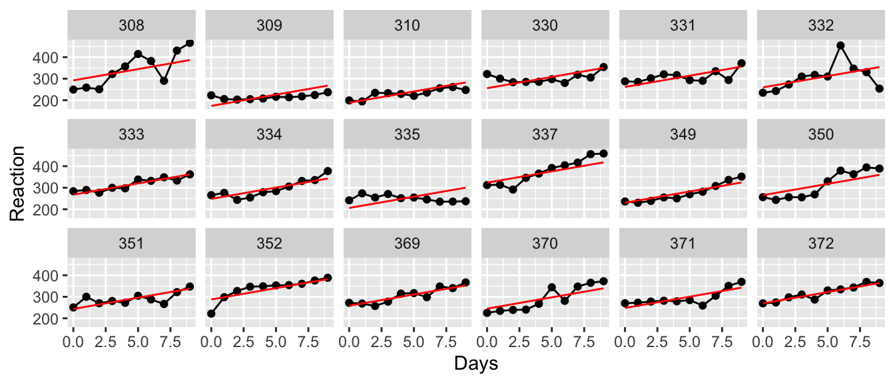
This isn’t too bad, but I would really like to have each patient have their own slope as well as their own y-intercept. The random slope will be calculated as a fixed effect of slope plus a random offset from that.
# Random effects for intercept and Slope
m2 <- lmer( Reaction ~ Days + ( 1+Days | Subject), data=sleepstudy)
sleepstudy <- sleepstudy %>%
mutate(yhat = predict(m2, re.form=~(1+Days|Subject)))
ggplot(sleepstudy, aes(y=Reaction, x=Days)) +
facet_wrap(~ Subject, ncol=6) +
geom_point() +
geom_line() +
geom_line(aes(y=yhat), color='red')
This appears to fit the observed data quite a bit better, but it is useful to test this.
## refitting model(s) with ML (instead of REML)## Data: sleepstudy
## Models:
## m1: Reaction ~ Days + (1 | Subject)
## m2: Reaction ~ Days + (1 + Days | Subject)
## Df AIC BIC logLik deviance Chisq Chi Df Pr(>Chisq)
## m1 4 1802.1 1814.8 -897.04 1794.1
## m2 6 1763.9 1783.1 -875.97 1751.9 42.139 2 7.072e-10 ***
## ---
## Signif. codes: 0 '***' 0.001 '**' 0.01 '*' 0.05 '.' 0.1 ' ' 1Here we see that indeed the random effect for each subject in both y-intercept and in slope is a better model that just a random offset in y-intercept.
It is instructive to look at this example from the top down. First we plot the population regression line.
sleepstudy <- sleepstudy %>%
mutate(yhat = predict(m2, re.form=~0))
ggplot(sleepstudy, aes(x=Days, y=yhat)) +
geom_line(color='red') + ylab('Reaction') +
ggtitle('Population Estimated Regression Curve')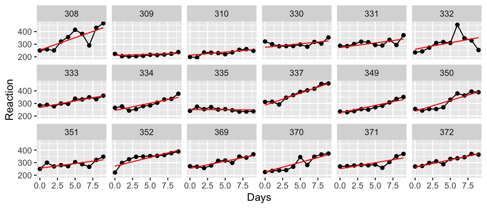
sleepstudy <- sleepstudy %>%
mutate(yhat.ind = predict(m2, re.form=~(1+Days|Subject)))
ggplot(sleepstudy, aes(x=Days)) +
geom_line(aes(y=yhat), size=3) +
geom_line(aes(y=yhat.ind, group=Subject), color='red') +
ylab('Reaction') + ggtitle('Person-to-Person Variation')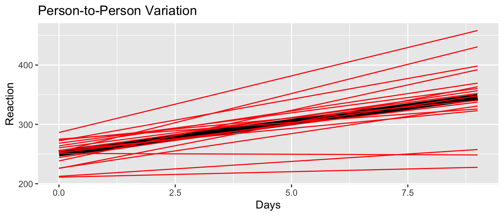
ggplot(sleepstudy, aes(x=Days)) +
geom_line(aes(y=yhat)) +
geom_line(aes(y=yhat.ind, group=Subject), color='red') +
ylab('Reaction') + ggtitle('Within Person Variation') +
facet_wrap(~ Subject, ncol=6) +
geom_point(aes(y=Reaction))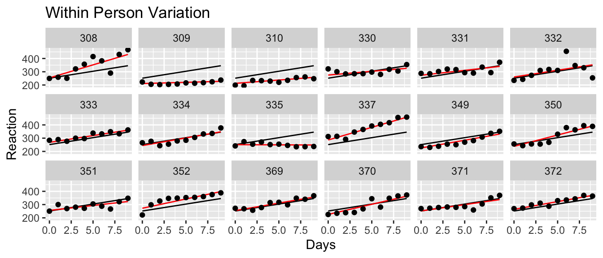
Finally we want to go back and look at the coefficients for the complex model.
## Linear mixed model fit by REML. t-tests use Satterthwaite's method [
## lmerModLmerTest]
## Formula: Reaction ~ Days + (1 + Days | Subject)
## Data: sleepstudy
##
## REML criterion at convergence: 1743.6
##
## Scaled residuals:
## Min 1Q Median 3Q Max
## -3.9536 -0.4634 0.0231 0.4633 5.1793
##
## Random effects:
## Groups Name Variance Std.Dev. Corr
## Subject (Intercept) 611.90 24.737
## Days 35.08 5.923 0.07
## Residual 654.94 25.592
## Number of obs: 180, groups: Subject, 18
##
## Fixed effects:
## Estimate Std. Error df t value Pr(>|t|)
## (Intercept) 251.405 6.824 17.005 36.843 < 2e-16 ***
## Days 10.467 1.546 16.995 6.771 3.27e-06 ***
## ---
## Signif. codes: 0 '***' 0.001 '**' 0.01 '*' 0.05 '.' 0.1 ' ' 1
##
## Correlation of Fixed Effects:
## (Intr)
## Days -0.13811.7 Confidence and Prediction Intervals
As with the standard linear model, we often want to create confidence and prediction intervals for a new observation or set of observations. Unfortunately, there isn’t a nice way to easily incorporate the uncertainty of the variance components. Instead we have to rely on bootstapping techniques to produce these quantities. Fortunately the lme4 package provides a function that will handle most of the looping required, but we have to describe to the program how to create the bootstrap samples, and given a bootstrap sample, what statistics do we want to produce intervals for.
Typically the bootstrap is used when we don’t want to make any distributional assumptions on the data. In that case, we sample with replacement from the observed data to create the bootstrap data. But, if we don’t mind making distributional assumptions, then instead of resampling the data, we could sample from the distribution with the observed parameter. In our sleep study example, we have estimated a population intercept and slope of \(251.4\) and \(10.5\). But we also have a subject intercept and slope random effect which we assumed to be normally distributed centered at zero with and with estimated standard deviations of \(24.7\) and \(5.9\). Then given a subjects regression line, observations are just normal (mean zero, standard deviation \(25.6\)) perterbations from the line. All of these numbers came from the summary(m2) output.
To create a bootstrap data simulating a new subject, we could do the following:
subject.intercept = 251.4 + rnorm( 1, mean = 0, sd=24.7)
subject.slope = 10.5 + rnorm( 1, mean = 0, sd=10.5)
c(subject.intercept, subject.slope)## [1] 258.67684 14.71306subject.obs <- data.frame(Days = 0:8) %>%
mutate( Reaction = subject.intercept + subject.slope*Days + rnorm(9, sd=25.6) )
ggplot(subject.obs, aes(x=Days, y=Reaction)) + geom_point()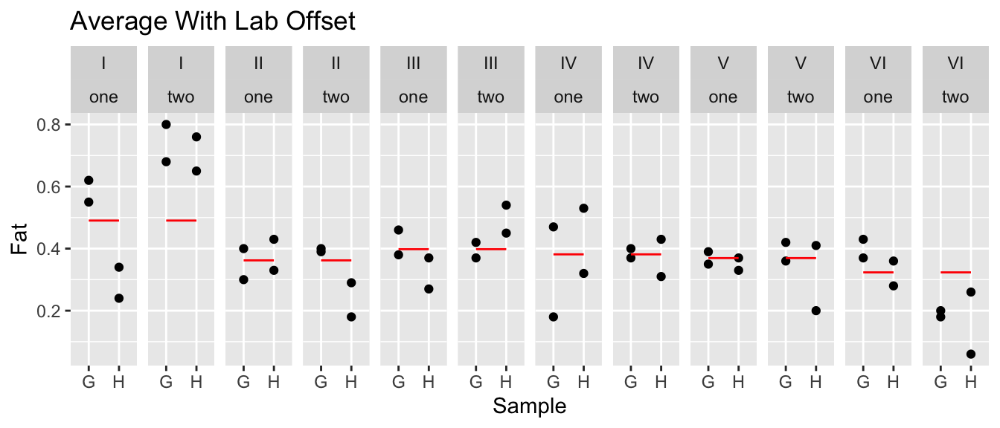
This approach is commonly referred to as a “parametric” bootstrap because we are making some assumptions about the parameter distributions, whereas in a “nonparametric” bootstrap we don’t make any distributional assumptions. By default, the bootMer function will perform a parametric bootstrap to create new bootstrap datasets and then analyze them using the same model you origally created.
11.7.1 Confidence Intervals
Now that we have a bootstrap data set, we need to take the data and then fit a model to the data and then grab the predictions from the model. At this point we are creating a confidence interval for the response line of a randomly selected person from the population. The lme4::bootMer function will create bootstrap data sets and then send those into the lmer function.
ConfData <- data.frame(Days=0:8)
myStats <- function(model){
out <- predict( model, newdata=ConfData, re.form=~0 )
return(out)
}
bootObj <- bootMer(m2, FUN=myStats, nsim = 1000 )
# for some reason the car package is having problems. I need to figure out how to make this work.
#
# hist(bootObj) # check for normality/skewness/etc
# BCa failed for me, but percentile is fine
# ConfData <- cbind( ConfData, car::Confint( bootObj, level=0.95 ))
# ConfData# Now for a nice graph! Unfortunately car::Confint used numbers for column names.
# So first I need to fix that.
# colnames(ConfData) <- c('Days', 'Estimate', 'lwr', 'upr')
# ggplot(ConfData, aes(x=Days)) +
# geom_line(aes(y=Estimate), color='red') +
# geom_ribbon(aes(ymin=lwr, ymax= upr), fill='salmon', alpha=0.2)11.7.2 Prediction Intervals
For a confidence interval, we just want to find the range of observed values. In this case, we want to use the bootstrap data, but don’t need to fit a model at each bootstrap step. The lme4::simulate function creates the bootstrap dataset and doesn’t send it for more processing. It returns a vector of response values that are appropriately organized to be appended to the orginal dataset.
# # set up the structure of new subjects
# PredData <- data.frame(Subject='new', Days=0:8) # Simulate a NEW patient
#
# # Create a n x 1000 data frame
# Simulated <- simulate(m2, newdata=PredData, allow.new.levels=TRUE, nsim=1000)
#
# # squish the Subject/Day info together with the simulated and then grab the quantiles
# # for each day
# PredIntervals <- cbind(PredData, Simulated) %>%
# gather('sim','Reaction', sim_1:sim_1000 ) %>% # go from wide to long structure
# group_by(Subject, Days) %>%
# summarize(lwr = quantile(Reaction, probs = 0.025),
# upr = quantile(Reaction, probs = 0.975))11.8 Exercises
- An experiment was conducted to determine the effect of recipe and baking temperature on chocolate cake quality. For each recipe, \(15\) batches of cake mix for were prepared (so 45 batches total). Each batch was sufficient for six cakes. Each of the six cakes was baked at a different temperature which was randomly assigned. Several measures of cake quality were recorded of which breaking angle was just one. The dataset is available in the
farawaypackage aschoccake.- For the variables Temperature, Recipe, and Batch, which should be fixed and which should be random?
- Inspect the data. How many levels of batch are there and how will that influence your model statements in R?
- Build a mixed model using the main effects (no interactions).
- Compare your model in part (c) one models with one or both of the fixed effects removed. Which model is preferred?
- Compare your model in part (c) with a more complicated model that includes the interaction between temperature and recipe. Which model is preferred?
- Using the model you selected, discuss the impact of the different variance components.
- An experiment was conducted to select the supplier of raw materials for production of a component. The breaking strength of the component was the objective of interest. Raw materials from four suppliers were considered. In our factory, we have four operators that can only produce one component per day. We utilized a Latin square design so that each factory operator worked with a different supplier each day. The data set is presented in the
farawaypackage asbreaking.- Explain why it would be natural to treat the operators and days as random effects but the suppliers as fixed effects.
- Inspect the data? Does anything seem weird? It turns out that the person responsible for entering the data made an input error. Fix it making sure to preserve that each day has all 4 suppliers and 4 operators.
- Build a model to predict the breaking strength. Describe the variation from operator to operator and from day to day.
- Test the significance of the supplier effect.
- Is there a significant difference between the operators?
An experiment was performed to investigate the effect of ingestion of thyroxine or thiouracil. The researchers took 27 newborn rats and divided them into three groups. The control group is ten rats that receive no addition to their drinking water. A second group of seven rats has thyroxine added to their drinking water and the final set ten rats have thiouracil added to their water. For each of five weeks, we take a body weight measurement to monitor the rats’ growth. The data are available in the
farawaypackage asratdrink. I suspect that we had 30 rats to begin with and somehow three rats in the thyroxine group had some issue unrelated to the treatment. The following R code might be helpful for the initial visualization.# we need to force ggplot to only draw lines between points for the same # rat. If I haven't already defined some aesthetic that is different # for each rat, then it will connect points at the same week but for different # rats. The solution is to add an aesthetic that does the equivalent of the # dplyr function group_by(). In ggplot2, this aesetheic is "group". ggplot(ratdrink, aes(y=wt, x=weeks, color=treat)) + geom_point(aes(shape=treat)) + geom_line(aes(group=subject)) # play with removing the group=subject aesthetic...- Consider the model with an interaction between Treatment and Week along with a random effect for each subject rat. Does the model with a random offset in the y-intercept perform as well as the model with random offsets in both the y-intercept and slope?
- Next consider if you can simplify the model by removing the interaction between Treatment and Week and possibly even the Treatment main effect.
- Comment on the effect of each treatment.